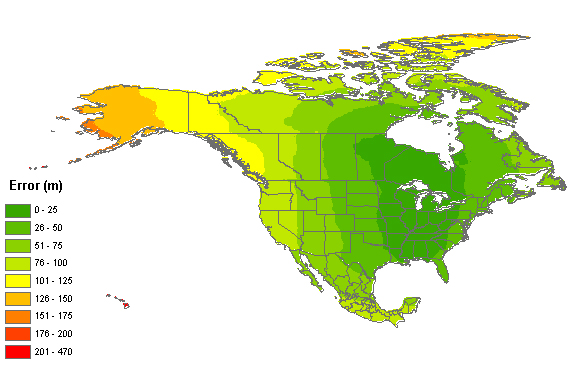
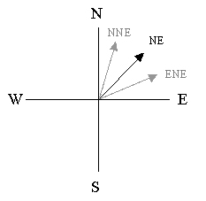
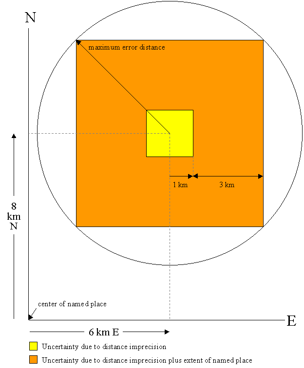
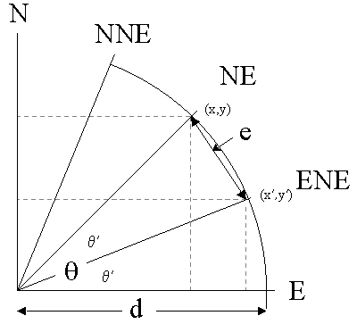
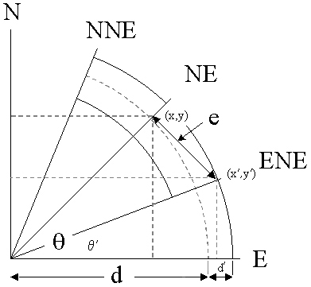
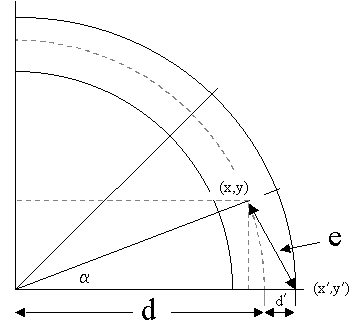

Copyright 2001-2015, The Regents of the University of California

MaNIS/HerpNet/ORNIS Georeferencing Guidelines 4
There are several fundamental sources of uncertainty in locality descriptions. These uncertainties vary in magnitude as well as in their interactions with each other. It is essential during georeferencing to determine and record the net uncertainty of a geographic coordinate determination. This document will explain the methodology for expressing the uncertainty as a single measurement - a maximum error. There are numerous ways in which this maximum error might be expressed, but the most convenient is as a simple distance. The sources of uncertainty, their relative magnitudes, and the interactions between them are discussed in the second section, Determining Maximum Error Distance from Uncertainties.
An Appendix containing a glossary, references, and a description of the data that should be captured for each georeferenced locality is appended for the convenience of the reader.
Determining Latitude & Longitude
Geographic coordinates can be expressed in a number of different coordinate
systems (e.g. decimal degrees, degrees minutes seconds, degrees decimal
minutes, UTM, etc.). Conversions can be made readily between coordinate
systems, but decimal degrees provide the most convenient coordinates to
use for georeferencing for no more profound a reason than a locality can
be described with only two attributes - decimal latitude and decimal longitude.
Named Places
The simplest locality descriptions consist of only a named place. Many
gazetteers record the location of the main post office of a populated place,
unless that place is a county seat, in which case the location of the courthouse
is recorded. Use the same method when making measurements on a map from
a populated place. Use the geographic center for the latitude and longitude
of other named places. Some gazetteers give bounding boxes to describe
the extents of large places. Use the distance from the coordinates of the
named place to the furthest point within the named place as the maximum
error distance. If the geographic center of the named place is not within
the confines of the shape of the named place, use the point nearest to
the geographic center that lies within the shape. In each of these cases
it is best to record the method of determination of the coordinates and
error in the remarks for the determination (e.g., "measured from the main
post office" or "measured from the geographic center of Bakersfield").
Example: "Bakersfield"
Township Range Section (TRS) descriptions are essentially no different
from that of any other named place. It is necessary to understand TRS descriptions
and how they describe a place. See the
References section, below,
for links to TRS information.
Example: "E of Bakersfield, T29S R29E Sec. 34 NE 1/4"
Offsets
Offsets generally consist of combinations of distances and directions
from a named place. Use the geographic coordinates of the named place (see
the Named Places section, above) as a starting point. Sometimes
the locality description gives a method for determining the offset (e.g.,
"by road", "by river", "by air", "up the valley", etc.). No special remark
about how the coordinates and error were determined is necessary in cases
where the measurement method is given in the locality description.
Example: "10 mi E (by air) Bakersfield"
Localities that have two orthogonal measurements in them should be treated
as if the measurements are "by air."
Example: "2 mi E and 1.5 mi N of Bakersfield"
If the distance was along a linear feature such as a road or river,
measure along the feature rather than use a straight line. There is no
uncertainty due to direction imprecision (see the Precision section,
below) for this type of locality description.
Example: "13 mi E (by road) Bakersfield"
There is a long-standing convention that the left and right sides of
a river are from the perspective of facing downstream.
(Note: The text incorrectly stated that the convention was based on
the perspective facing the source and was amended on 17 Jan 2004.
Thanks to Margaret Thayer of FMNH for this correction.)
Thus, in
the following example, the locality is on the east side of the river, in
Illinois, rather than on the west side, in Missouri.
Example: "left bank of the Mississippi River, 16 mi downstream
from St. Louis"
Localities that have one linear offset measurement from a named place,
but that do not specify how that measurement was taken are open for case-by-case
judgment.
Example: "10.2 mi E of Yuma"
The judgment itself must be documented in the remarks for the determination (e.g., "Assumed 'by air' - no roads E out of Yuma", or "Assumed 'by road' on Hwy. 80"). If there is no clear best choice, use the midpoint between the two possibilities as the geographic coordinate and assign an error large enough to encompass the coordinates and uncertainties of both methods. In this case, the remark should be something like "Error encompasses both distance by air and distance by road (Hwy. 80)".
Vagueness
At times, locality descriptions are fraught with vagueness. It is not
the purpose here to belittle localities of this type; in fact, an honest
admission of the unknown is preferable to masking it with unwarranted precision.
The most important type of vagueness in a locality description is one
in which the locality is in question. No such locality should be georeferenced.
Example: "Bakersfield?"
Many locality descriptions imply an offset from a named place without
definitive directions or distances. In these cases use the geographic center
of the named place for the geographic coordinates. For the maximum error
distance, use the greatest distance that is not likely to be considered
in the area of another named place. Clearly there is a measure of subjectivity
involved here. Let common sense prevail and document the assumptions made.
Example: "near Bakersfield"
Sometimes offset information is vague either in its direction or in
its distance. If the direction information is vague, record the geographic
coordinates of the center of the named place and include the offset distance
in the determination of the maximum error distance.
Example: "5 mi from Bakersfield"
Uncertainty in the offset distance is a fact of the business; most localities
are recorded without
error estimates. The addition of an adverbial modifier to the distance
part of a locality description, while an honest observation, should not
affect the determination of the geographic coordinates or the maximum error.
For the example below, treat the locality as if it read "3 mi E of Bakersfield."
Example: "about 3 mi E of Bakersfield"
The worst type of locality description to georeference is one that is
internally inconsistent. There are numerous possible causes for inconsistencies.
Rather than determine coordinates for such localities, annotate the locality
with the nature of the inconsistency and refer the locality to the source
institution for reconciliation. One common source of inconsistency in locality
descriptions comes from trying to match elevation information with the
rest of the description.
Example: "10 mi W of Bakersfield, 6000 ft" (There is
no place anywhere near 10 mi W of Bakersfield at an elevation of 6000 ft).
Another common source of inconsistency occurs when the locality description
does not match the geopolitical subdivision of which it is supposed to
be a part. At times the locality can still be determined because the geopolitical
subdivision is clearly at fault. In this case, georeference the locality
and annotate it to describe the problem.
Example: "Delano, Tulare Co." (Delano is in Kern Co.)
Often there is no way to know if the geopolitical subdivision or something
in the locality description itself is at fault. In the following example
the county may be wrong, the distance may be wrong, or the direction may
be wrong. This locality cannot be disambiguated without further research,
which is best left to the institution that provided the locality description.
Example: "5 mi N of Delano, Kern Co." (5 mi N would put
the locality in Tulare Co.)
Determining Maximum Error Distance from
Uncertainties
The three basic sources of coordinate information used in georeferencing
are maps, gazetteers, and localities already recorded with coordinates.
The process of georeferencing includes an assessment of the uncertainties
in geographic coordinate determinations. Uncertainties may arise due to
combinations of the following sources:
1) the extent of a locality
2) GPS accuracy
3) unknown datum
4) imprecision in distance measurements
5) imprecision in coordinate measurements
6) map scale
7) imprecision in direction measurements
It is essential to understand how each of these sources contribute to the net error in a geographic coordinate determination. The first six of these are sources of distance uncertainty. Though distance uncertainties may generally be summed, there are exceptions, and the georeferencer must be cognizant of them. Distance uncertainties must never be summed with direction uncertainties; the interactions between these two different types of sources are always non-linear. The types of uncertainty that may apply for each of the sources of coordinate information are as follows:
map - locality extent, unknown datum, distance imprecision, map scale, and coordinate imprecision, which must all be summed before calculating their interaction with direction imprecision.
gazetteer - locality extent, unknown datum, distance imprecision, and coordinate imprecision, which must be summed before calculating their interaction with direction imprecision.
coordinates - unknown datum and coordinate imprecision, which must be summed to get the maximum error distance.
GPS - unknown datum, GPS accuracy, and coordinate imprecision, which must be summed to get the maximum error distance.
Guidelines for determining the magnitude of each of the types of uncertainty are given in the paragraphs below. Following the guidelines for the individual types of uncertainty are two sections on the combinations of uncertainties.
Uncertainty due to the extent of a locality
Named places are not single points; they have extents. Although there
are conventions for placing the coordinates of a named place at the post
office, courthouse, or geographic center of a town, one cannot be sure
that the person who recorded the locality used a particular convention.
Use the distance
from the geographic center of the named place to its furthest extent as
the uncertainty. Since many localities
are based on cities that have changed in size over the years, the extents
on current maps might not reflect the extents when specimens were collected.
In almost every case the current extents will be greater than the historical
ones and the error calculations will be overestimated. This is consistent
with our conservative approach to georeferencing.
Townships are just another instance of a named place (see the
References
section, below, for links to information on townships). In general, a
township is a 6 mile square, with each of its component sections being
a 1 mile square. Exceptions to this rule occur often in practice to account
for the curvature of the earth, but it is generally safe to use the values
in the table below as the extents of various divisions of a township.
These values assume that the greatest extent is from the center of the
division to a corner of that division, and that the coordinates of the division
are not being calculated from orthogonal offsets.
Note that the tools for calculating coordinates for TRS locations only
calculate based on a Township Section. If you want the center of a Township
or another location in a Township more precisely defined than a Section,
you'll need to make calculations based on orthogonal offsets from the center
of a Township Section. For example,
to find the center of a Township, first find the coordinates of the
center of Section 15 in that Township. Then calculate the coordinates of a
point 0.5 mi W and 0.5 mi S of the center of Section 15. This new point is
the center of the Township. To calculate the maximum error distance for this
example, make sure to use a distance precision of "exact" and an extent of
3 mi. This will insure that the contribution to the error based on the extent
of the Township will be 4.243 mi (see the Extents of divisions of a
township Table, below).
To find the center of a quarter section, first find the center of the
Section. Then calculate the coordinates of the quarter section by using
offsets of 0.25 mi in the appropriate directions from these coordinates.
For example, the center
of the NW 1/4 of Section 13 would be 0.25 mi N and 0.25 mi W of the center
of Section 13. In calculating the maximum error distance for this example,
set the distance precision to "exact" and set the extent to 0.25 mi.
This will insure that the contribution to the error based on the extent
of the Township wil be 0.354 mi (see the Extents of divisions of a
township Table, below). This
same method can be extended to calculate the centers
of other divisions of a Section as well. For 1/4 of 1/4 of a Section, use an
extent of 0.125 mi, and for 1/4 of 1/4 of 1/4 of a Section, use 0.625 mi
for the extent.
| Division | Example |
|
|
| Township | T6S R14E |
4.243 mi
|
3 mi
|
| Section | T6S R14E Sec. 23 |
0.707 mi
|
0.5 mi
|
| 1/4 Section | T6N R14E Sec. 23 NE 1/4 |
0.354 mi
|
0.25 mi
|
| 1/4 of 1/4 Section | T6N R14E Sec. 23 NE 1/4 SW 1/4 |
0.177 mi
|
0.125 mi
|
| 1/4 of 1/4 of 1/4 Section | T6N R14E Sec. 23 NW 1/4 NE 1/4 SW 1/4 |
0.089 mi
|
0.0625 mi
|
Uncertainty due to GPS accuracy
The accuracy of the coordinate data reported by a GPS varies with time,
place, and equipment used. Previous to the order to cease
Selective Availability (deliberate GPS signal scrambling)
at 8PM EST 1 May 2000, uncorrected GPS receivers were subject to artificial
inaccuracies of about 100 meters. Today, many GPS receivers have a function to
determine the estimated accuracy of given reading, but this information is
not universally available, nor is it often recorded with the coordinates.
It is not possible to determine the actual accuracy of a GPS reading
retroactively if it was not recorded at the time of the reading. In fact,
many GPS receivers estimate accuracy poorly. My Garmin eTrex Summit, for
example, reports positions with putative accuracies of 7 meters
that are demonstrably off by 15 meters. Where extreme accuracy is required,
be sure of the capabilities of your GPS under the prevailing conditions
when the coordinates are recorded. For retrospective uncertainty estimates
where detailed information is not available, 30 meters is a reasonable,
conservative estimate of GPS accuracy in the absence of Selective Availability.
Uncertainty due to an unknown datum
Seldom in natural history collections have geographic coordinates been
recorded along with the underlying datum on which they were determined.
Even now, when GPS coordinates are being recorded seemingly as definitive
locations, the geodetic datum is being ignored. Interestingly, even the
GNIS placename data are derived from maps in both NAD27 and NAD83 without
direct reference to which datum was used for any particular record. Without
recording the datum with the coordinates, uncertainty is being introduced.
Figure 1 shows the magnitude of uncertainty (in meters) over North America
based on not knowing the datum on which the source was based.

Figure 1. Map of North America showing the magnitude of uncertainty from not knowing whether coordinates were taken from a source using NAD27, NAD83, or WGS84.
The uncertainty due to an unknown datum is a complicated, non-linear function of latitude and longitude. This map can be used as a rough guide for determining the magnitude of that uncertainty in North America. If the locality is outside the area covered by the map in Figure 1, use 1 km as the uncertainty due to an unknown datum.
Precision
Precision can be difficult to gauge from locality descriptions; it
is seldom, if ever, explicitly recorded. Furthermore, a database record
may not reflect, or may reflect incorrectly, the precision inherent in
the original measurement, especially if the locality description has undergone
interpretation from the original, verbatim description. Different precision
issues arise from recording distance measurements, directions (headings),
and coordinates. Potential uncertainties from each of these sources are
discussed in the paragraphs below.
Uncertainty associated with distance
precision
Distance may be recorded in a locality description with or without
significant digits, and those digits may or may not be warranted. A conservative
way to insure that distance precision is not inflated is to treat distance
measurements as integers with fractional remainders. Thus 10.25 becomes
10 1/4, 10.5 becomes 10 1/2, etc. Calculate the uncertainty for
these distances based on the fractional part of the distance, using 1 divided
by the denominator of the fraction.
Example: "10.5 mi N of Bakersfield" (the fraction is
1/2, uncertainty should be 0.5 mi)
Example: "10.6 mi N of Bakersfield" (the fraction is
6/10, uncertainty should be 0.1 mi)
Example: "10.75 mi N of Bakersfield" (the fraction is
3/4, uncertainty should be 0.25 mi)
For distances that appear as integer powers of ten (10, 20, 300, 4000), use
0.5 times ten to that power for the uncertainty.
Example: "10 mi N of Bakersfield" (the uncertainty should be 5 mi)
Example: "140 mi N of Bakersfield" (the uncertainty should be 5 mi)
Example: "100 mi N of Bakersfield" (the uncertainty should be 50 mi)
Example: "2000 m N of Bakersfield" (the uncertainty should be 500 m)
Note: If the locality description contains distance measures of varying
precision, the person recording the data was demonstrably sensitive to
the highest level of precision expressed in the locality, and it is fair
to assume that level of precision would not vary within a single locality
description. Therefore, the distance precision for the locality can safely
be assumed to be the same as for the highest precision measurement in the
locality description.
Uncertainty associated with directional
precision
Direction is almost always expressed in locality descriptions using
cardinal or intercardinal directions rather than degree headings. This
traditional practice can introduce unfortunate directional imprecisions.
The problem arises from the fact that we don't know, out of context, what
the recorder meant by, say, "north", except that it is probably distinct
from the other cardinal directions. Hence, "north" is not "east" or "west",
but it could be any direction between northeast and northwest. The directional
uncertaintyin this case is 45 degrees in either direction from the given
direction.
Example: "10 mi N of Bakersfield"
Of course, if the locality description contains two orthogonal directions,
then the measurements are likely to have been made on a map in exactly
those directions. In this case, directional imprecision can be ignored.
Example: "10 mi N and 5 mi E of Bakersfield"
If the locality description contains directions more specific than the
cardinal directions (e.g., "NE"), then the person recording the data was
demonstrably sensitive to intercardinal directions and the directional
precision can safely be assumed to be greater than if only cardinal directions
were used. Thus, "NE" could mean any direction between ENE and NNE, which
is twice as precise as the first direction example, above. The directional
uncertainty in this case is 22.5 degrees in either direction from the given
direction.
Example: "10 mi NE of Bakersfield"
A locality description that contains further refined directions is correspondingly
more precise. Thus, in the following example the directional uncertainty
is 11.25 degrees.
Example: "10 mi ENE of Bakersfield"

Uncertainty associated with coordinate
precision
When recording geographic coordinates, always keep as many digits as
possible. Recording coordinates with insufficient precision can result
in unnecessary uncertainties. The magnitude of the uncertainty is a function
not only of the precision with which the data are recorded, but also a
function of the datum and the coordinates themselves. This is a direct
result of the fact that a degree does not correspond to the same distance
everywhere on the surface of the earth. Uncertainty due to the precision
with which the original coordinates were recorded can be estimated as follows:
uncertainty=sqrt( lat_error2 + long_error2)
where
R is the radius of curvature of the meridian at the given latitude,
X is the distance from the point to the polar axis orthogonal to the
polar axis, and
lat_long_precision is the precision with which the coordinates were
recorded, as a fraction of one degree.
R is given by the following equation:
R = a (1-e2)/(1-e2sin2(latitude))3/2
where
a is the semi-major axis of the reference ellipsoid (the radius at
the equator),
e is the first eccentricity of the reference ellipsoid, defined by
the following equation:
e2 = 2f - f2
where
f is the flattening of the reference ellipsoid.
X is also a function of geodetic latitude and is given by the following equation:
X = abs(Ncos(latitude))
where
N is the radius of curvature in the prime vertical at the given latitude
and is defined as follows:
N = a/sqrt(1-e2sin2(latitude))
Example: Lat: 10.27 Long: -123.6
In this example the lat_long_precision is 0.01 degrees. Thus, lat_error
= 1.1061 km, long_error = 1.0955 km, and the uncertainty resulting from
the combination of the two is 1.5568 km. Note: The foregoing method uses
a semi-major axis of 6378137.0 meters and a flattening of 1/298.25722356
based on the WGS84 datum1. Following is a table showing examples
of error contributions for different levels of precision in the original
coordinates using the WGS84 reference ellipsoid. Calculations are based
on the same degree of imprecision in both coordinates and are given for
several different latitudes.
|
|
|
|
|
Latitude |
|
|
156904 m
|
146962 m
|
124605 m
|
112109 m
|
|
|
15691 m
|
14697 m
|
12461 m
|
11211 m
|
|
|
1570 m
|
1470 m
|
1247 m
|
1122m
|
|
|
157 m
|
147 m
|
125 m
|
113 m
|
|
|
16 m
|
15 m
|
13 m
|
12 m
|
|
|
2 m
|
2 m
|
2 m
|
2 m
|
|
|
2615 m
|
2450 m
|
2077 m
|
1869 m
|
|
|
262 m
|
245 m
|
208 m
|
187 m
|
|
|
27 m
|
25 m
|
21 m
|
19 m
|
|
|
3 m
|
3 m
|
3 m
|
2 m
|
|
|
44 m
|
41 m
|
35 m
|
32 m
|
|
|
5 m
|
5 m
|
4 m
|
4 m
|
|
|
1 m
|
1 m
|
1 m
|
1 m
|
Uncertainty due to map scale
Each map has an inherent level of accuracy. For most maps, particularly
old ones, accuracy of scale is not documented. However, the USGS
does have horizontal accuracy standards that are supposed to be met for
all of its maps. Specifically,
"For maps on publication scales larger than 1:20,000, not more than 10 percent of the points tested shall be in error by more than 1/30 inch, measured on the publication scale; for maps on publication scales of 1:20,000 or smaller, 1/50 inch."2
It is extremely important to note that a digital map is not more accurate
than the original from which it was derived, nor is it more accurate when
you zoom in on it. The accuracy is strictly a function of the scale of
the original map. Below is a table showing the uncertainty due to scale
for USGS maps.
|
|
|
|
|
1:1200
|
|
|
|
1:2400
|
|
|
|
1:4800
|
|
|
|
1:10,000
|
|
|
|
1:12,000
|
|
|
|
1:24,000
|
|
|
|
1:25,000
|
|
|
|
1:63,360
|
|
|
|
1:100,000
|
|
|
|
1:250,000
|
|
|
The uncertainty inherent in non-USGS maps may not be documented. Use a value of 1mm of uncertainty on non-USGS maps. 1mm is the specified chart accuracy of all NOAA nautical charts"3, and corresponds to about three times the detectable graphical error and should serve well as an uncertainty estimate for most maps. By this rule, the uncertainty for a map of scale 1:25,000, for example, would be 25 meters and that for a 1:500,000 map would be 500 meters.
Combinations of uncertainties:
distances
Distance uncertainties in any given direction are linear and additive.
Following is an example of a simple locality description and an explanation
of the manner in which multiple sources of uncertainty interact to result
in an overall maximum error distance.
Example: "6 km E (by road) of Bakersfield"
In the example above, there is no error contribution from direction; all uncertainties apply only to the distance. The possible sources of uncertainty for this example are 1) the extent of Bakersfield, 2) unknown datum, 3) distance imprecision, and 4) map scale. Suppose the center of Bakersfield is 3 km from the eastern city limit and the distance is being measured on a USGS map at 1:100,000 scale on the NAD83 datum. The uncertainty due to the extent of Bakersfield is 3 km, there is no uncertainty due to an unknown datum (assuming the datum is recorded with the coordinates), the distance imprecision is 1 km, and the uncertainty due to map scale is 51 meters. The maximum error distance for this locality is the sum of these, or 4.051 km
If more than one direction is used in the locality description, uncertainties
apply to each of the two cardinal directions and the combination of them
is non-linear.
Example: "6 km E and 8 km N of Bakersfield"
This example consists of two orthogonal distance measures from a named place, each with its own uncertainty due to distance imprecision. Ignore for the moment all sources of uncertainty except those arising from distance imprecision. Under this simplification, a proper description of the uncertainty is a bounding box centered on the point 6 km E and 8 km N of Bakersfield. Each side of the box is 2 km in length (1 km uncertainty in each cardinal direction from the center). Since we are characterizing the maximum error as a single distance measurement, we need the circle that circumscribes the above-mentioned bounding box. The radius of this circle is the distance from the center of the box to any corner. The radius could either be measured on a map or calculated using a right triangle, the hypotenuse of which is the line between the center of the bounding box and a corner. Given the rule that the distance precision is the same in both cardinal directions, the triangle will always be a right isosceles triangle and the hypotenuse will always be the the square root of 2 times the distance precision. So, for the above example the error distance associated with only the distance precision would be 1.414 km.
So far we have accounted only for distance imprecision for this example.
How do we take into account the uncertainty due to the shape of the named
place? There are many methods that could be used to determine the coordinates
and error for this situation.
Note: The method presented here is quite
conservative, resulting in errors larger than they need to be. A better
alternative would be to multiply only the distance precision error by the
square root of 2 (contributions in both dimensions), and then sum that with
all other sources, which already account for the two dimensions. This second
method is the one used in the Georeferencing
Calculator since version 20130205.
Determine the furthest distance within the named place from the geographic center of the named place in either of the two cardinal directions mentioned in the locality description. Add this distance to the distance precision and take the square root of 2 times the sum to get the maximum error distance associated with the combination of distance precision and the extent of the named place. For the example above, suppose the furthest extent of the city limits of Bakersfield either E or N from the geographic center is 3 km. There would be a total of 4 km of uncertainty in each of the two directions and the radius of the circumscribing circle would be 4 km times the square root of 2, or 5.657 km.

What other sources of uncertainty need to be accounted for in this example? Suppose the coordinates for Bakersfield were taken from the GNIS database, in which there is no reference to datum and the coordinates are given to the nearest second. The coordinates for Bakersfield are given in the GNIS database as 35d 22' 24" N, 119d 01' 04" W. At this location the uncertainty due to an unknown datum is 79 meters. The datum uncertainty contributes in each of the orthogonal directions. Thus, the uncertainty in each direction would be 4.079 km and the net uncertainty is this number times the square root of two, or 5.769 km.
The coordinates in the GNIS database are given to the nearest second. Based on the Uncertainty associated with coordinate precision section, above, the uncertainty due to coordinate precision alone is about 39 meters at the latitude of Bakersfield. This number already accounts for the contributions in both cardinal directions, so it must not be multiplied by the square root of 2. Instead, simply add the coordinate precision uncertainty to the calculated sum of uncertainties from the other sources. For the example above, the maximum error distance is just 5.769 + 0.039 = 5.808 km.
If the coordinates for Bakersfield had been taken from a USGS map with a scale of 1:100,000, the datum would be on the map, so there would be no contribution to the error from an unknown datum (assuming the georeferencer records the datum with the coordinates). However, the uncertainty due to the map scale would have to be considered. For a USGS map at 1:100,000 scale, the uncertainty is 167 feet, or 50 meters. In the above example, the net uncertainty in each direction would be 4.050 km. When multiplied by the square root of 2 their combination would be 5.728 km. Add the uncertainty due to coordinate imprecision to get the maximum error distance. Suppose the minutes are marked on the margin of the map and you interpolated to the nearest tenth of a minute. The coordinate precision would be 0.1 minutes and the uncertainty would be about 0.239 km from this source, therefore the maximum error distance would be 5.768 + 0.239 = 5.967 km.
Combinations of uncertainties: distance and direction
Though distance imprecisions in a given direction are linear and additive,
the sum of them contributes non-linearly to the error arising from directional
imprecision. An additional technique is required to account for the correlation
between distance and direction uncertainties.
Example: "10 km NE of Bakersfield"
If we don't consider distance imprecision, the uncertainty due to the direction imprecision is encompassed by an arc centered 10 km (d) from the center of Bakersfield (at x,y) at a heading of 45 degrees (θ), extending 22.5 degrees in either direction from that point. At this scale the distance (e) from the center of the arc to the furthest extent of the arc (at x',y') at a heading of 22.5 degrees (θ') from the center of Bakersfield can be approximated by the Pythagorean Theorem.

e=sqrt( (x'-x)2 + (y'-y)2 )
Now let's consider the distance uncertainties in this example. Suppose
the contributions to distance uncertainty are 3 km (extent of Bakersfield),
1 km (distance imprecision for "10 km"), 0.079 km (unknown datum, coordinates
are from the GNIS database), and 0.040 km (gazetteer data are recorded to the
nearest second) for a sum of 4.119 km. The error region (the shape of the region
describing the combination of distance and direction uncertainties) will be a band
twice this width (2 x 4.119 = 8.238 km) centered on 10 km offset arc spanning 22.5
degrees on either side of 45 degrees.

but now x = d cos(θ), y = d sin(θ),
x' = (d+d') cos(θ'), and y' = (d+d') sin(θ')
where d' is the sum of the distance uncertainties.
The geometry can be generalized, and simplified, by rotating the image above so that the point (x',y') is on the x axis.

but now x = d cos(α), y = d sin(α),
x' = d+d', and y' = 0
where d' is still the sum of the distance uncertainties and α is
an angle equal to the magnitude of the direction uncertainty. For our example
above, the distance uncertainty is 4.119 km and the direction uncertainty
is 22.5 degrees. Given these values, the maximum error distance is 6.210
km.
Summary
Locality descriptions are inexact and seldom give estimates of uncertainty.
An ideal description of a specific locality has no uncertainty. One way
to achieve this ideal is to describe the locality by a complex shape within
which the whole locality must certainly lie. The capture of shape data
is certainly possible with current GIS technology, and is even demonstrably
more efficient than the methods described above. However, there are technical
challenges yet to be met in order to make the capture of shape data feasible
in a collaborative, Internet-based georeferencing environment.
One alternative is to describe a locality using a point of arbitrarily
high precision with an attendant maximum error distance, which encompasses
all of the uncertainties associated with the geographic coordinates. This
is an expression of the locality which satisfies the requirement that the
locality given in the text description must lie within the spatial description.
There is a fundamental advantage of this alternative; the uncertainties
are summarized as a single value, the meaning of which is independent of
any geodetic surface. This allows for quantitative filtering on spatial
data quality, which ultimately allows the user of the spatial data to select
appropriate subsets of the data for analyses.
Appendix
Decimal degrees - degrees expressed as a single real number (e.g., -22.343456) rather than as a composite of degrees, minutes, seconds, and direction (e.g., 7d 54' 18.32" E).
Geodetic surface model - a geometric description of the surface of the earth.
Geodetic radius - the distance from a point on the geodetic surface to the intersection of the geodetic vertical with the geodetic equatorial plane.
Geographic coordinates - latitude and longitude, measured in any of various coordinate systems.
Geographic center - To find the geographic center of a shape, first find the extremes of both latitude and longitude within the shape and then take their respective means. If the result is not within the shape itself, choose instead the point in the shape nearest to the calculated center.
UTM - Universal Transverse Mercator. A grid coordinate system specifying a datum, zone, and offsets from the equator and from the meridian of the zone. See the References section, below, for more information.
DecimalLongitude - the longitude coordinate (in decimal degrees) at
the center of a circle encompassing the whole of a specific locality. Decimal
longitudes west of the Greenwich Meridian are considered negative and must
be greater than or equal to -180, while eastern longitudes are positive
and less than or equal to 180.
Example: -122.4900 degrees (which is roughly the same as 122d
29' 24" W).
Maximum_Error_Distance - the upper limit of the distance from the given latitude and longitude describing a circle within which the whole of the described locality must lie.
Maximum_Error_Units - the units of length in which the maximum error is recorded (e.g., mi, km, m, and ft). Express maximum error distance in the same units as the distance measurements in the locality description.
GeodeticDatum - the geometric description of a geodetic surface model (e.g., NAD27, NAD83, WGS84). Datums are often recorded on maps and in gazetteers, and can be specifically set for most GPS devices so the waypoints match the chosen datum. Use "not recorded" when the datum is not known.
VerbatimCoordinateSystem - the coordinate system in which the raw data are being entered. For the purpose of collaborative georeferencing this value will be "decimal degrees." However, existing geographic coordinates may be entered in degrees minutes seconds, degrees decimal minutes, or UTM coordinates. Original coordinates should be recorded as well if they are different from decimal degrees.
GeoreferenceSources - the reference source (e.g., the specific map, gazetteer, or software) used to determine the coordinates. Such information should provide enough detail so that anyone can locate the actual reference that was used (e.g., name, edition or version, year). Map scales should be recorded in the reference as well (e.g., USGS Gosford Quad map 1:24000, 1973).
GeoreferencedBy - the person or organization making the coordinate and error determination.
GeoreferenceDate - the date on which the determination was made.
GeoreferenceRemarks - comments on methods and assumptions used in determining coordinates or errors when those methods or assumptions differ from or expand upon the accepted guidelines.
Coordinates Only
Example 1: 35 degrees 22' 24" N, 119 degrees 1' 4" W
Calculation Type: Error only (because we already know the coordinates of the final
location)
Locality Type: Coordinates only
Coordinate Source: locality description
Coordinate System: degrees minutes seconds
Latitude: 35 degrees 22' 24" N
Longitude: 119 degrees 1' 4" W
Datum: not recorded
Coordinate Precision: nearest second
Measurement Error: 0
Distance Units: km, m, mi, yds, or ft
Decimal Latitude: 35.3733333
Decimal Longitude: -119.0177778
Maximum Error Distance: 119 m, 0.119 km, 0.074 mi, 130 yds, 390
ft, or 0.064 nm
Uncertainty sources: 79 m from unknown datum, 40 m from coordinate precision nearest
second
Example 2: 35.37, -119.02, NAD27, Digital USGS Gosford Quad 1:24000 map
Calculation Type: Error only (because we already know the coordinates of the final
location)
Locality Type: Coordinates only
Coordinate Source: Digital USGS map: 1:24,000
Coordinate System: decimal degrees
Latitude: 35.37
Longitude: -119.02
Datum: NAD27
Coordinate Precision: 0.01 degrees
Measurement Error: 0 (digital map - no measurement error)
Distance Units: km, m, mi, yds, or ft
Decimal Latitude: 35.37
Decimal Longitude: -119.02
Maximum Error Distance: 1446 m, 1.446 km, 0.899 mi, 1582 yds, 4745
ft, or 0.781 nm
Uncertainty sources: 12 m from coordinate source USGS 1:24,000 map, 1434 m from
coordinate precision 0.02 degrees
Named Place Only
Example: Bakersfield
Suppose the coordinates for Bakersfield came from the GNIS database
(a gazetteer) and the distance from the center of Bakersfield to the furthest
city limit is 3 km.
Calculation Type: Error only (because we already know the coordinates of the final
location)
Locality Type: Named place only
Coordinate Source: gazetteer
Coordinate System: degrees minutes seconds
Latitude: 35 degrees 22' 24" N
Longitude: 119 degrees 1' 4" W
Datum: not recorded
Coordinate Precision: nearest second
Measurement Error: 0
Extent of Named Place: 3 km
Distance Units: km
Decimal Latitude: 35.3733333
Decimal Longitude: -119.0177778
Maximum Error Distance: 3.119 km (3119 m)
Uncertainty sources: 79 m from unknown datum, 40 m from coordinate precision nearest
second, 3000 m from the extent of the named place
Distance Only
Example: 5 mi from Bakersfield
Suppose the coordinates for Bakersfield came from Topozone for which
all map coordinates have been reprojected in NAD27. Suppose also that the
distance from the center of Bakersfield to the furthest city limit is 2
mi.
Calculation Type: Error only (because we already know the coordinates of the final
location)
Locality Type: Distance only
Coordinate Source: gazetteer
Coordinate System: decimal degrees
Latitude: 35.373
Longitude: -119.018
Datum: NAD27
Coordinate Precision: 0.001 degrees
Offset Distance: 5 mi
Extent of Named Place: 2 mi
Measurement Error: 0
Distance Units: mi
Distance Precision: 1 mi
Decimal Latitude: 35.373
Decimal Longitude: -119.018
Maximum Error Distance: 7.589 mi (12213 m)
Uncertainty sources: 0.089 mi (143 m) from coordinate precision 0.001 degrees, 2 mi
(3219 m) from the extent of the named place, 5 mi (8047 m) from the offset distance, 0.5
mi (805 m) from the 1 mi distance precision
Distance Along a Path
Example: 13 mi E (by road) Bakersfield
Suppose the coordinates for this locality were interpolated to the nearest
1/10th minute from the printed USGS Taft 1:100,000 Quad map and the
distance from the center of Bakersfield to the furthest city limit is 2
mi.
Calculation Type: Error only
Locality Type: Distance along path
Coordinate Source: USGS map: 1:100,000
Coordinate System: degrees decimal minutes
Latitude: 35 degrees 26.1' N
Longitude: 118 degrees 48.1' W
Datum: NAD27
Coordinate Precision: 0.1 minutes
Extent of Named Place: 2 mi
Measurement Error: 0.03107 mi (0.5 mm on 1:100,000 map)
Distance Units: mi
Distance Precision: 1 mi
Decimal Latitude: 35.435
Decimal Longitude: -118.8016667
Maximum Error Distance: 2.711 mi (4363 m)
Uncertainty sources: 0.03107 mi (50 m) from printed USGS 1:100,000 map accuracy, 0.148
mi (239 m) from coordinate precision 0.1 minutes, 2 mi (3219 m) from the extent of the
named place, 0.03107 mi (50 m) from the ability to distinguish 0.5 mm on a printed USGS
1:100,000 map, 0.5 mi (805 m) from the 1 mi distance precision
Distance Along Orthogonal Directions
Example: 2 mi E and 3 mi N of Bakersfield
Suppose the coordinates for Bakersfield (the named place) came from the GNIS database
(a gazetteer), the coordinates of the locality were calculated to the nearest second,
and the distance from the center of Bakersfield to
the furthest city limit is 2 mi.
Calculation Type: Coordinates and error
Locality Type: Distance along orthogonal directions
Coordinate Source: gazetteer
Coordinate System: degrees minutes seconds
Latitude: 35 degrees 25' 4" N
Longitude: 118 degrees 58' 54" W
Datum: not recorded
Coordinate Precision: nearest second
North or South Offset Distance: 3 mi
North or South Offset Direction: N
East or West Offset Distance: 2 mi
East or West Offset Direction: E
Extent of Named Place: 2 mi
Measurement Error: 0
Distance Units: mi
Distance Precision: 1 mi
Decimal Latitude: 35.4612939
Decimal Longitude: -118.946227
Maximum Error Distance: 2.781 mi (4475 m)
Uncertainty sources: 0.049 mi (79 m) from unknown datum, 0.025 mi (40 m) from
coordinate precision nearest second, 2 mi (3219 m) from the extent of the named place,
0.707 mi (1138 m) from the 1 mi distance precision in two dimensions (the diagonal of a
0.5 mi by 0.5 mi square)
Distance at a Heading
Example 1: 10 mi E (by air) Bakersfield
Suppose the coordinates for Bakersfield came from the GNIS database
(a gazetteer), the coordinates of the locality were calculated to the nearest second,
and the distance from the center of Bakersfield to the furthest
city limit is 2 mi.
Calculation Type: Coordinates and error
Locality Type: Distance at a heading
Coordinate Source: gazetteer
Coordinate System: degrees minutes seconds
Latitude: 35 degrees 22' 24" N
Longitude: 118 degrees 50' 56 W
Datum: not recorded
Coordinate Precision: nearest second
Offset Distance: 10 mi
Extent of Named Place: 2 mi
Measurement Error: 0
Distance Units: mi
Distance Precision: 10 mi
Decimal Latitude: 35.3733333
Decimal Longitude: -118.6717880
Maximum Error Distance: 12.254 mi (19721 m)
Direction Precision: 45 degrees (between NE and SE, each 45 degrees from E)
Uncertainty sources: complicated combination of unknown datum, coordinate precision
nearest second, extent of the named place, distance precision, and direction precision
Example 2: 10 mi ENE (by air) Bakersfield
Suppose the coordinates for the locality were interpolated to the nearest
second from the USGS Gosford 1:24,000 Quad map on which you can distinguish
between millimeters and the distance from the center of Bakersfield to the furthest city
limit is 2 mi.
Calculation Type: Coordinates and error
Locality Type: Distance at a heading
Coordinate Source: USGS map: 1:24,000
Coordinate System: degrees minutes seconds
Latitude: 35 degrees 24' 21" N
Longitude: 118 degrees 51' 25" W
Datum: NAD27
Coordinate Precision: nearest second
Offset Distance: 10 mi
Extent of Named Place: 2 mi
Measurement Error: 0.007 mi (0.5 mm on 1:24,000 map)
Distance Units: mi
Distance Precision: 10 mi
Decimal Latitude: 35.4613445
Decimal Longitude: -118.6932627
Maximum Error Distance: 7.491 mi (12055 m)
Direction Precision: 11.25 degrees either side of ENE
Uncertainty sources: complicated combination of map accuracy, unknown datum,
coordinate precision nearest second, extent of the named place, measurement accuracy
(0.5 mm at 1:24,000), distance precision, and direction precision
Preferred citation:
Wieczorek J (2001) MaNIS/HerpNet/ORNIS Georeferencing Guidelines. Museum of Vertebrate Zoology, University of California, Berkeley. Available: http://manisnet.org/docs/GeorefGuide.html.
1. NIMA, 2000. Department of Defense World Geodetic System 1984. Its Definition and relationships with local geodetic systems. TR8350.2, Third Edition, 3 Jan 2000. This document can be found at the following URL:
http://earth-info.nga.mil/GandG/publications/tr8350.2/wgs84fin.pdf2. USGS, 1999. National Mapping Program Technical Instructions. Part 2. Specifications. Standards for Digital Line Graphs. This document can be found at the following URL:
http://nationalmap.gov/standards/pdf/Pdlg0999.pdf3. NOAA. Differential GPS (DGPS) & Your Chart. Specified Chart Accuracy.
http://www.nauticalcharts.noaa.gov/nsd/DGPSchart.html4. The results of this work were published as the point-radius method in the following manuscripts:
Georeferencing Calculator:
Map Accuracy Standards:
|
Copyright 2001-2015, The Regents of the University of California |
|
|
John Wieczorek 24 Sep 2001 |
Rev. 21 Dec 2015 |